修改记录总清单（索引）
| 序号 | 模块与改动主题（点击跳转） | 端别 | 定位 / 触发路径 | 涉及文件与留痕形式 |
|---|---|---|---|---|
| 01 | 移动端学员端 · 工作台补齐「师资申请」入口与弹窗 | 移动端 | 学员端 → 工作台 → 全部服务 › 考核与成长 → 师资申请 | 移动端/shared/tdesign-app.js · 图文对比（4 张） |
| 02 | 移动端教师端 ·「我的责任学员」缺失样式补齐与排版修复 | 移动端 | 教师端 → 常用服务 / 全部应用 › 带教与评价 → 我的责任学员 | 移动端/shared/tdesign-app.css · 图文对比（2 张） |
| 03 | PC 管理员工作台 · 图标配色收敛至复旦儿科官网三色浅底体系（方案 A） | PC端 | 院级管理员（manager.html） → 首页工作台（常用服务 / 全部服务） |
design-tokens.css + components.css + nav.css + account-hub.js · 图文对比（3 张） |
| 04 | 学员端选课报名 · PC 与移动端「班次」文案全部统一为「课次」 | 双端 | 学员端（student.html / 移动端/student-tdesign.html） → 选课报名 / 我的报名 |
shared/js/enroll-renderer-v2.js + 移动端/shared/tdesign-app.js · 图文对比（6 张） |
| 05 | 住培蓝图 · 课程蓝图横向挤字修复与纵向分组展开重构（方案 1） | PC端 | 管理端 → 住培蓝图 → 课程蓝图（pages/课程蓝图/index.html） |
pages/课程蓝图/page.js + pages/课程蓝图/page.css · 图文对比（3 张） |
| 06 | 移动端学员端 ·「成绩与评估记录」「反馈与学习计划」迁至首页独立入口 | 移动端 | 学员端 → 首页常用服务（默认 8 宫格）& 全部服务 › 考核与成长；底部「评估」Tab 精简为评估任务 | 移动端/shared/tdesign-app.js · 图文对比（5 张） |
| 07 | PC 全角色左侧导航 · 对齐千问 256px 尺寸、默认收起二级与无竖线纯缩进重构 | PC端 | 全站 PC 角色入口（manager.html、王老师.html、王同学.html、base-manager.html 等 15 个页面） |
sidebar.css + nav-render.js + design-tokens.css · 图文对比（3 张） |
| 08 | PC 端工作台 · 教师/学员新增「师资申请」抽屉与「添加常用」真实勾选弹窗 | PC端 | PC 工作台（王老师.html、王同学.html → 常用服务 / 全部服务 › 我的成果） |
account-hub.js + page.js + page.css · 图文对比（5 张） |
| 09 | 电子班牌最终稿 · 独立目录收拢与「本周课表」抽屉极简流体玻璃+3D头像视觉升级 | PC端 | 15.6" 电子班牌（pages/电子班牌/index.html → 本周课表上拉抽屉） |
index.html + 需求规格说明.md · 图文对比（3 张） |
| 10 | 移动端学员端 ·「成绩与评估记录」移除顶部 3 张冗余汇总 KPI 卡 | 移动端 | 移动端/student-tdesign.html → 首页常用服务「成绩与评估记录」 |
tdesign-app.js · 图文对比（2 张） |
| 11 | 移动端教师端 ·「表单开发任务」与「委员会工作」迁入工作台全部服务（非委员隐藏） | 移动端 | 移动端/teacher-tdesign.html → 底部「评估」Tab & 首页「全部服务 › 带教与评价」 |
tdesign-app.js · 图文对比（3 张） |
| 12 | PC 班牌和大屏管理 · 对齐新版电子班牌首页视觉（缩略图 + 详情预览 + 广播投屏拟真） | PC端 | 管理端 → 空间管理 → 班牌和大屏管理（pages/班牌和大屏管理/index.html） |
page.js + page.css · 图文对比（5 张） |
移动端学员端 · 工作台补齐「师资申请」入口与弹窗
定位：学员端（移动端/student-tdesign.html） → 工作台 → 全部服务 › 考核与成长 → 师资申请（与教师端保持一致，支持在「管理」中固定到首页常用服务及顶部全局搜索）。实现文件：移动端/shared/tdesign-app.js。
修改前 · 存在问题
- 移动端教师端工作台「全部服务 › 带教与评价」已配备「师资申请」按钮及列表/新建表单/详情三段式弹窗，但学员端
configs.student.apps、configs.student.support与serviceHallGroups均未注册该入口。 - 学员端打开「全部服务 › 考核与成长」仅见 4 项（理论考试、成绩与评估记录、反馈与学习计划、成果申报），无法发起师资申请。
- 师资申请表单中「职称自动校验」与「申请人信息」硬编码为教师
王老师 · EK1005 · 消化科，未适配当前登录角色账号。

修改后 · 改动说明
- 在
configs.student.apps与configs.student.support补齐「师资申请」配置项（图标file-signature、紫色徽标，与教师端一致）。 - 在
serviceHallGroups学员端「考核与成长」分组内紧邻「成果申报」加入「师资申请」，复用统一openFacultyApply三段式弹窗流程。 - 表单「职称自动校验」与「申请人信息」改为动态读取
currentAccount/config，学员端自动展示当前学员姓名、学号/工号与科室信息。
修改后 · 弹窗与表单交互留痕
改后 · 师资申请列表弹窗
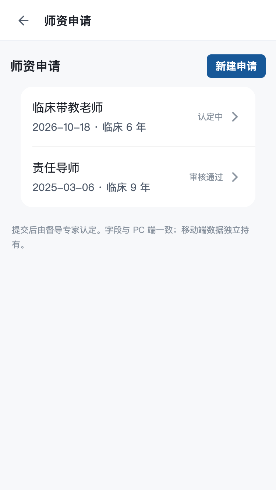
改后 · 新建申请表单（动态学员信息）

移动端教师端 ·「我的责任学员」缺失样式补齐与排版修复
定位：教师端（移动端/teacher-tdesign.html） → 首页「常用服务」/「全部应用 › 带教与评价」→ 我的责任学员（组件 <fdek-mentor-mobile>）。修改文件：移动端/shared/tdesign-app.css（对应模板 移动端/shared/mentor-mobile.js）。
修改前 · 存在问题
mentor-mobile.js升级后新增的 22 个.fdek-mm-*类名在tdesign-app.css中全部缺失，导致页面大面积“无样式裸奔”。- 顶部「带教 1 / 3 人」与「修改个人简介」上下挤压；待办通知「访谈记录待审核」文字粘连无卡片底色，「全部已读」露出浏览器原生灰底黑框按钮。
- 学员头像（
.fdek-mm-avatar-img）未限制尺寸与圆角，原图撑满整张卡片；招收年度、绑定方式、轮转科室、最近访谈四个键值紧贴左对齐竖排。
修改后 · 改动说明
- 在
移动端/shared/tdesign-app.css中基于--fdek-*设计变量一次性补齐全部 22 个缺失.fdek-mm-*样式（校验剩余缺失为 0）。 - 顶部负荷栏改为白底圆角卡片左右两端对齐；未读通知改为浅橙提醒卡片，标题/正文/日期分层排布，右侧置「去处理」，底部「全部已读」改为蓝色文字链接。
- 学员头像限定为
44×44圆形（详情52×52）object-fit: cover并与姓名、工号横向排列；学员字段区重构为 2 列浅灰底卡片网格；顺带补齐更换导师待确认、徽章、退回说明、横向滚动子标签及禁用按钮态。
PC 管理员工作台 · 图标配色收敛至复旦儿科官网三色浅底体系（方案 A）
定位：院级管理员（manager.html） → 首页工作台（常用服务 / 全部服务，同时全局收敛共享 .s-service-tile-icon 样式）。参考规范：复旦大学附属儿科医院官网（https://ch.shmu.edu.cn/）三色体系。修改文件：shared/styles/design-tokens.css、shared/styles/components.css、shared/styles/nav.css、shared/js/account-hub.js。
修改前 · 存在问题
- 工作台服务卡片图标（
.s-service-tile-icon[data-tone]）使用 7 种高饱和实底色（钴蓝、紫罗兰、森林绿、鸭青、砖橙、玫红、灰青），同区混排形成视觉噪点，客户反馈“颜色太多”。 - 图标色板与左侧已确认的复旦品牌蓝（
#175898）及医院官网配色割裂，且同一业务分类内部卡片颜色不一致。

修改后 · 改动说明（方案 A）
- 对齐医院官网三色体系，将
--color-service-*与.s-service-tile-icon收敛为品牌蓝（#175898）、医技青绿（#21bcac / #117f74）、暖珊瑚橙（#f8955a / #c45b1e）三色，砍掉紫、粉、森林绿等杂色。 - 图标容器由高饱和实底白字升级为浅底 tint + 1px 细描边 + 彩色线框图标，整体观感轻盈专业、与左侧深蓝导航形成清晰主次。
- 按业务大类统一
account-hub.js中的卡片归属色（用户/课程/题库/蓝图用品牌蓝，轮转/空间/师生用医技青绿，物资/评估用暖珊瑚橙），同分类颜色一致。
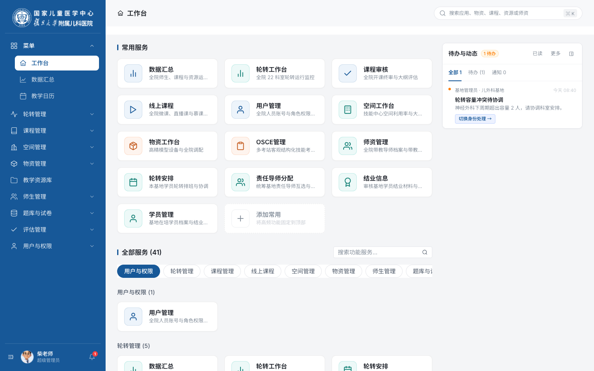
修改后 · 全部服务分组色彩一致性留痕
改后 · 全部服务按业务大类统一三色归属（滚动视图）

学员端选课报名 · PC 与移动端「班次」文案全部统一为「课次」
定位：学员端 PC（student.html → 我的学习 → 选课报名 / 我的报名）与移动端（移动端/student-tdesign.html → 选课报名）。实现文件：shared/js/enroll-renderer-v2.js、移动端/shared/tdesign-app.js。
修改前 · 存在问题（移动端）
- 移动端选课卡片中，普通课显示「2 个班次」、专项课（「儿童导尿术（男性）」）显示「2 个课次」，而右侧展开按钮写死「查看班次」，造成同一卡片内「左课次、右班次」文案割裂。
- 选课空态提示、我的选课抽屉与日历提示、课程说明及 Toast 提示均混用「班次」。
PC 端 · 选课报名（可选课程）修改前后对比

PC 端 · 我的报名修改前后对比
修改前 · KPI 说明与表头使用「班次报名成功 / 满员班次 / 其他班次 / 班次人数」
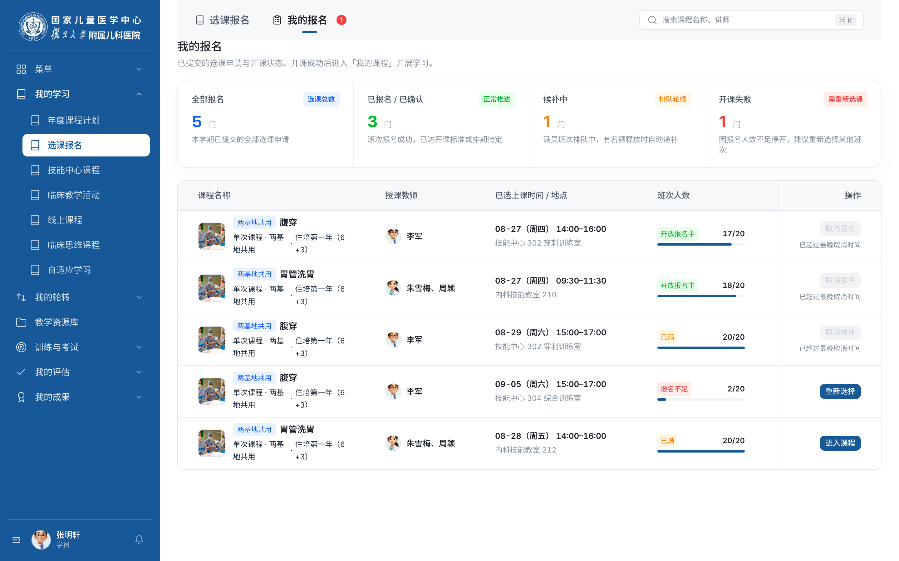
修改后 · KPI 说明与表头全部统一为「课次报名成功 / 满员课次 / 其他课次 / 课次人数」

住培蓝图 · 课程蓝图横向挤字修复与纵向分组展开重构（方案 1）
定位：管理端 → 住培蓝图 → 课程蓝图（pages/课程蓝图/index.html）。修改文件：pages/课程蓝图/page.js、pages/课程蓝图/page.css。
修改前 · 存在问题
- 采用 5 级横向思维导图并排（教学环境 168px + 课程类型 196px + 课程卡 + 固定 300px EPA 列 + 核心胜任力列）叠加右侧 296px 覆盖提醒栏，100% 缩放下（1440–1680px）最右侧「核心胜任力-子胜任力」被挤成 ~30px 竖条，中文逐字折行，只能靠缩小浏览器勉强查看。
- 教学环境与课程类型长期霸占左侧 400px+ 形成大面积空白死区；课程卡使用语义错位的 iOS 滑动开关控制展开/收起，整体观感粗糙。
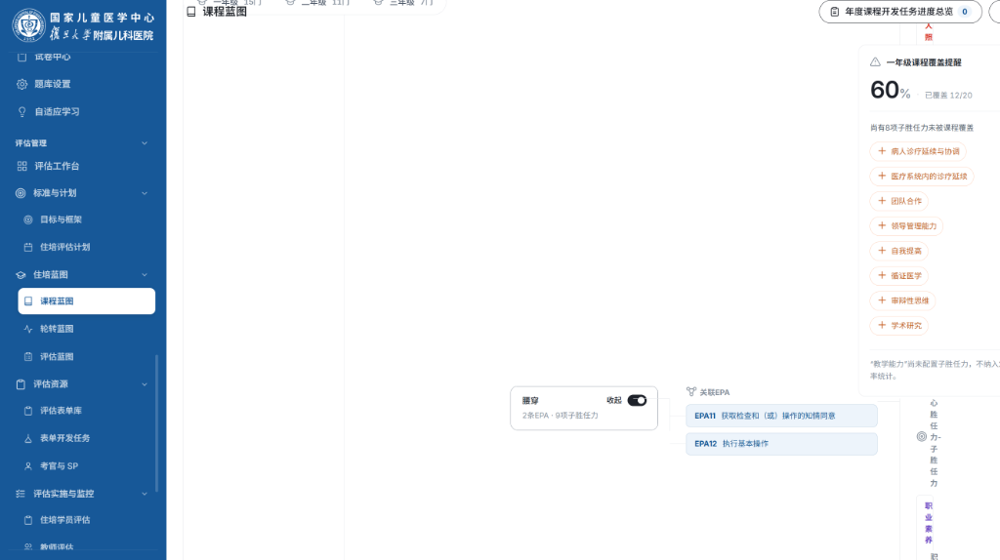
修改后 · 改动说明（保留 5 级横向树状导图并根治挤字）
- 完整保留 5 级横向树状导图与拓扑连线（教学环境 → 课程类型 → 课程卡 → 关联 EPA → 核心胜任力-子胜任力），同时将右侧 296px 覆盖提醒栏收拢为年级顶部全宽紧凑缺口带（保留点击一键发起开发任务），把主画布完整宽度还给导图。
- 精算 5 级列宽并锁定最小可读宽度：
教学环境 156px/课程类型 184px全称不截断，核心胜任力列锁定最小可读宽度（1440px 下实测宽288px），100% 缩放下五级完整排开、零竖折挤字；窄屏时画布独立横向滚动。 - 补充轻量缩放控件与交互精修：分区头新增
− / 100% / +导图缩放器（支持 60%–120% 及一键重置）；课程卡去掉 iOS 滑动开关，改用更干净的树节点「展开 > / 收起 <」触发器并校准全部连线几何。
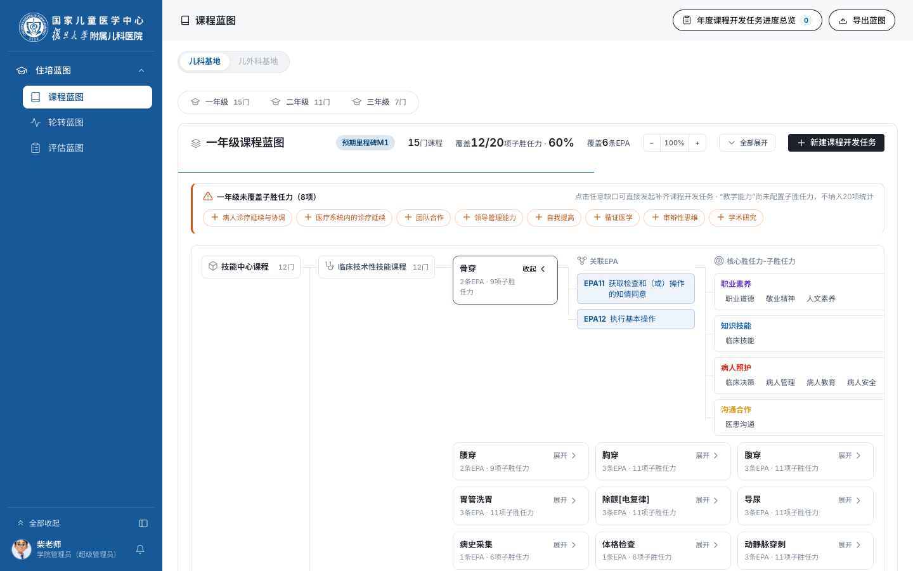
修改后 · 默认收起态全览（1440×900 · 100% 缩放）
改后 · 树状导图收起态 + 顶部紧凑缺口带 + 导图缩放控件
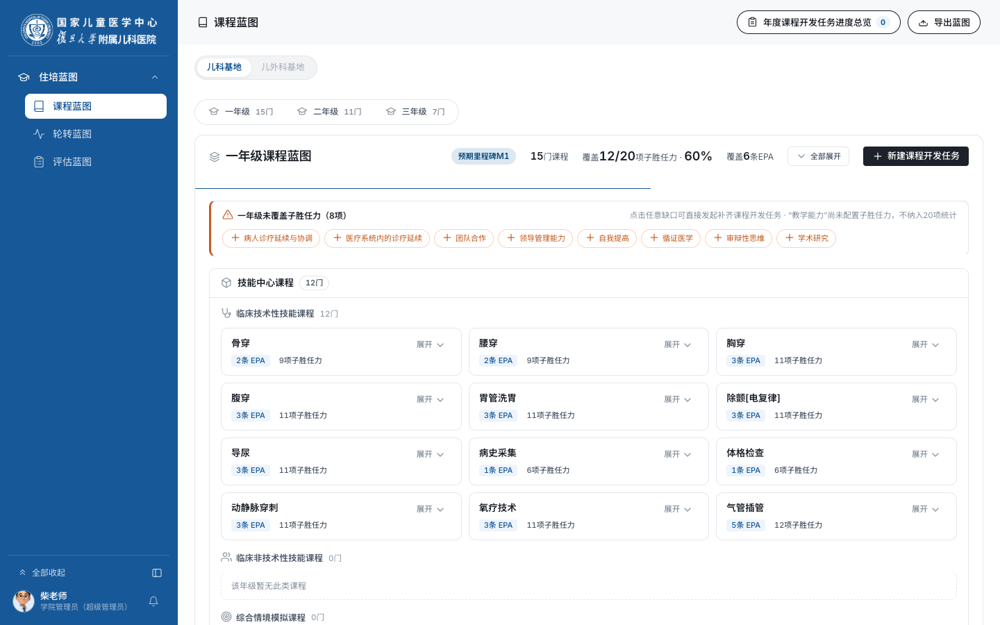
移动端学员端 ·「成绩与评估记录」「反馈与学习计划」迁至首页独立入口
定位：学员端（移动端/student-tdesign.html） → 首页「常用服务」默认 8 宫格与「全部服务 › 考核与成长」独立入口；底部「评估」Tab 精简为纯评估任务。修改文件：移动端/shared/tdesign-app.js。
修改前 · 存在问题
- 底部「评估」Tab 顶部叠加 3 段切换栏（
评估任务 / 成绩与评估记录 / 反馈与学习计划），下方又有待我评估 / 待他人评估与状态筛选，一屏 3 层导航过于拥挤。 - 首页「常用服务」默认 8 宫格中「成绩与评估记录」排在第 9 位被截断藏进「全部服务」；且从首页点击这两个服务会强制跳转到底部「评估」Tab，入口职责混乱。
修改后 · 改动说明
- 底部「评估」Tab 减负：移除学员端顶部 3 段切换栏
stu-eval-subnav及冗余状态stuEvalSection，标题固定为「评估任务」，直接展示待我评估 / 待他人评估、状态筛选与「+ 发起评估」按钮。 - 首页工作台独立入口：调整
configs.student.apps默认排序，将「成绩与评估记录」「反馈与学习计划」并列置入首页「常用服务」默认 8 宫格（同时保留于「全部服务 › 考核与成长」）。 - 首页二级页承接新版完整内容：改写
openFeature路由以全屏二级页（overlay = 'detail'）打开；「成绩与评估记录」完整迁入对齐 PC 端的 KPI 概览 + 5 阶段筛选与详情/复核弹窗，「反馈与学习计划」展示导师阶段性评价与个人学习计划。
修改后 · 首页独立按钮与二级页交互留痕
改后 · 首页「常用服务」默认 8 宫格
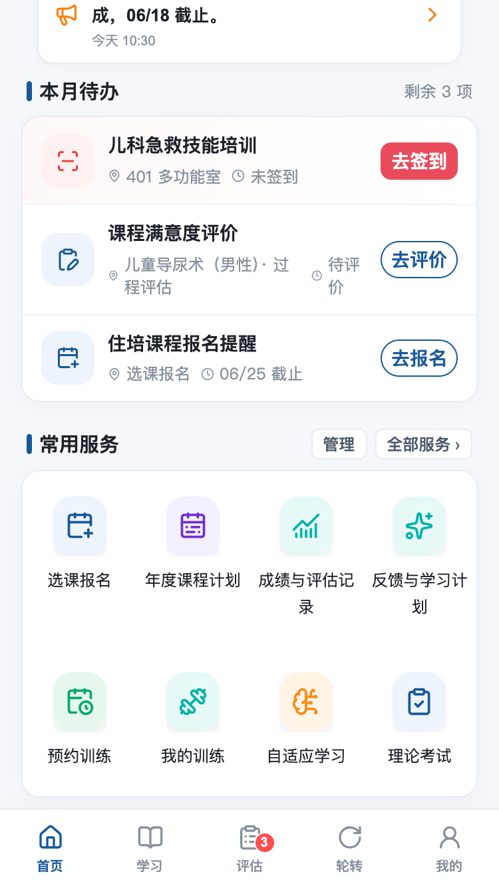
改后 · 成绩与评估记录二级页（5 阶段口径）
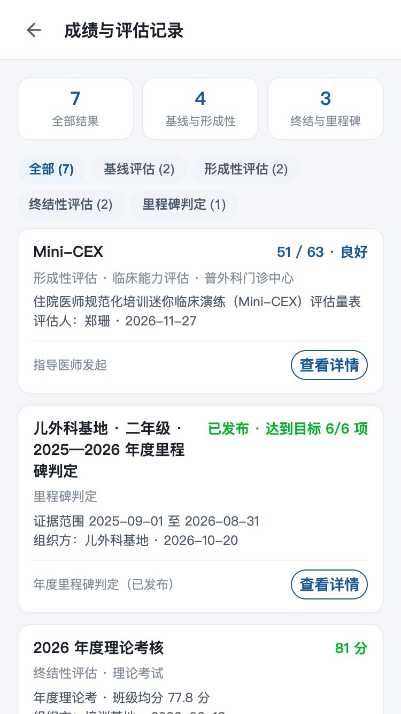
改后 · 反馈与学习计划二级页
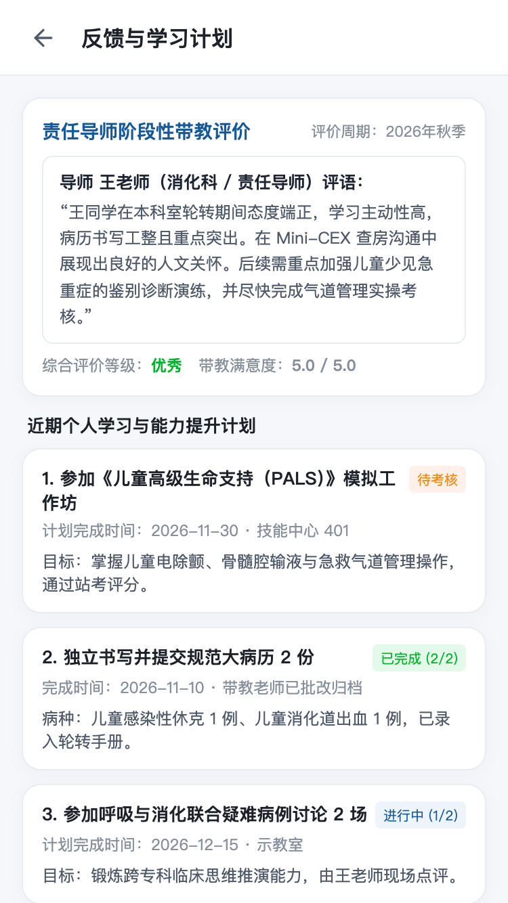
PC 全角色左侧导航 · 对齐千问 256px 尺寸、默认收起二级与无竖线纯缩进重构
定位：全站 PC 角色入口（manager.html、base-manager.html、student.html、王老师.html、王同学.html 等 15 个角色页面共享）。修改文件：shared/styles/sidebar.css、shared/js/nav-render.js、shared/styles/design-tokens.css。
修改前 · 存在问题
- 所有业务模块的二级菜单默认全部展开，左侧导航列表超长密密麻麻，视觉重心分散。
- 一级分组以小字号灰标题呈现，与工作台、单入口模块层级不统一，缺少清晰业务域分割线。
- 侧栏折叠/展开时图标位置存在跳跃，且没有一键「全部收起」二级菜单的快捷入口。
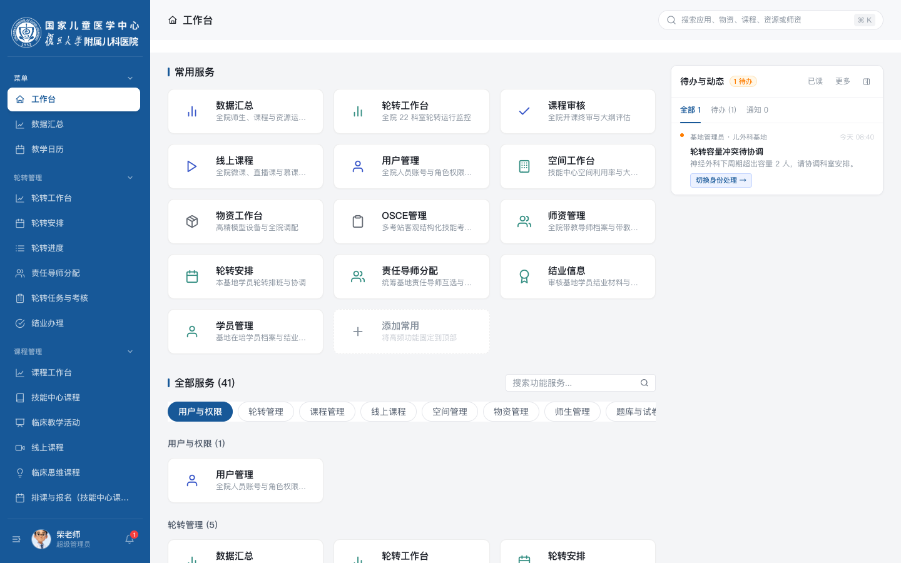
修改后 · 改动说明（保持原 #175898 底色不变）
- 千问实测尺寸体系：侧栏宽度统一为
256px，一、二级统一36px行高、14px字号、18px线性图标（stroke-width: 1.5）与4px间距，选中态与悬浮态统一为8px圆角矩形。 - 默认收起 + 细分割线：工作台（工作台/数据汇总/教学日历）与单入口模块（教学资源库）平铺为一级直达项，用细分割线区隔业务域与系统区；多子项业务模块默认全部收起，进入某页面自动展开所属分组，并支持底部一键「全部收起」。
- 无竖线纯缩进 + 折叠平移：二级菜单采用
20px纯缩进替代深蓝底上的生硬竖线；侧栏收起时图标固定left: 8px平滑过渡至36×36圆角矩形，无跳跃感。
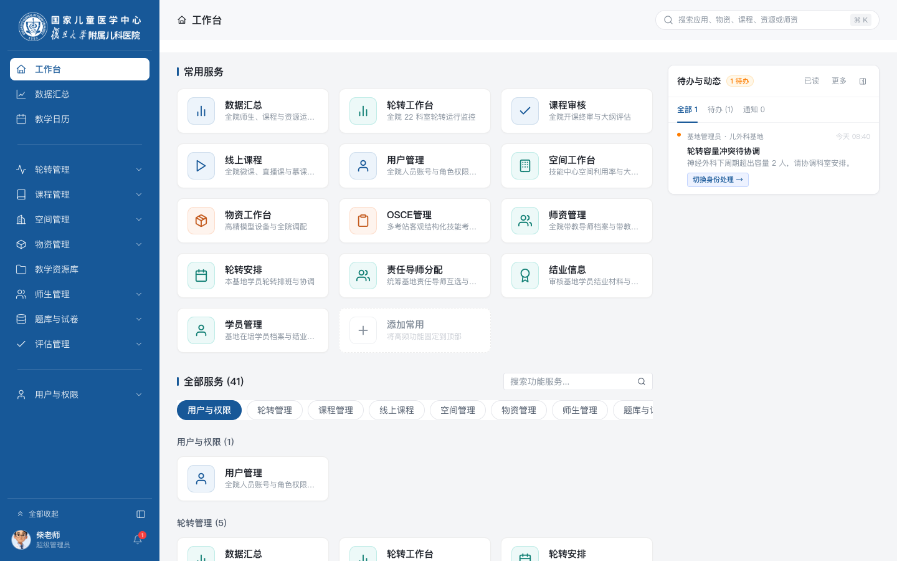
修改后 · 点击一级模块展开二级菜单留痕（无竖线纯缩进 + 同字号同图标）
改后 · 展开「轮转管理」二级菜单（14px 字号 / 18px 线性图标 / 20px 纯缩进）
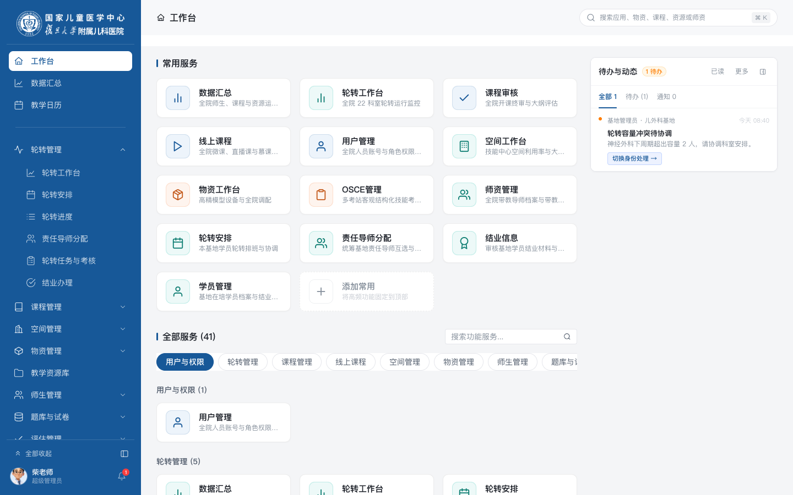
PC 端工作台 · 教师/学员新增「师资申请」抽屉与「添加常用」真实勾选弹窗
定位：PC 工作台（王老师.html、王同学.html 等全角色首页工作台）。修改文件：shared/js/account-hub.js、pages/角色工作台/page.js、pages/角色工作台/page.css。
修改前 · 存在问题
- 假卡片占位：工作台「常用服务」末尾的「添加常用」卡片点击后仅弹出
自定义添加常用服务轻提示，无弹窗也无法真正勾选保存。 - 双端功能缺口：移动端教师端、学员端已提供「师资申请」卡片与三段式申请流程，但 PC 端工作台缺少对应入口与抽屉弹窗。
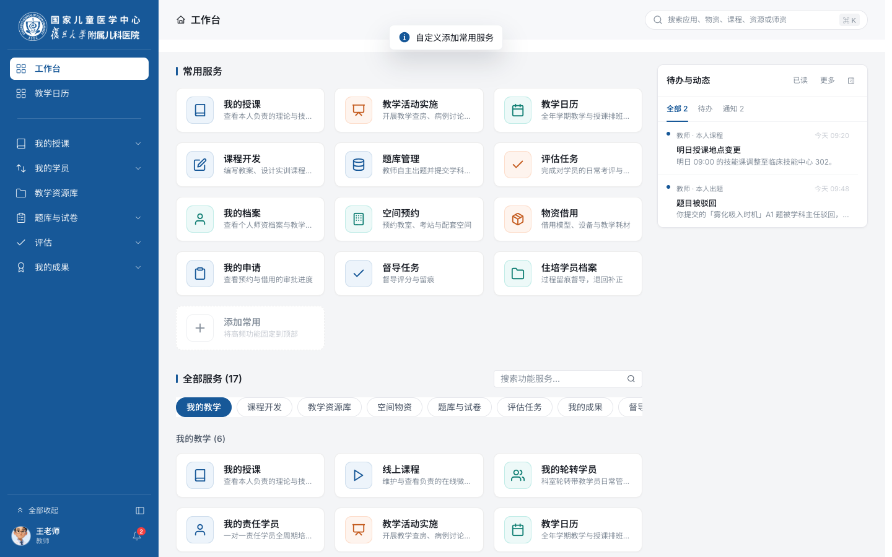
修改后 · 改动说明
- 双端对齐「师资申请」卡片：在教师端与学员端的「常用服务」及「全部服务 › 我的成果」中均补齐「师资申请」入口卡片。
- PC 独立存储抽屉弹窗：点击打开
a-drawer抽屉，完整复刻移动端「申请列表 → 新建申请表单 → 申请详情」流程，数据独立持久化至fdek.pc.faculty.apply.v1。 - 「添加常用」真实勾选弹窗：点击打开「自定义常用服务」弹窗，支持搜索、按分类勾选/取消、统计已选数并按账号保存或恢复默认。
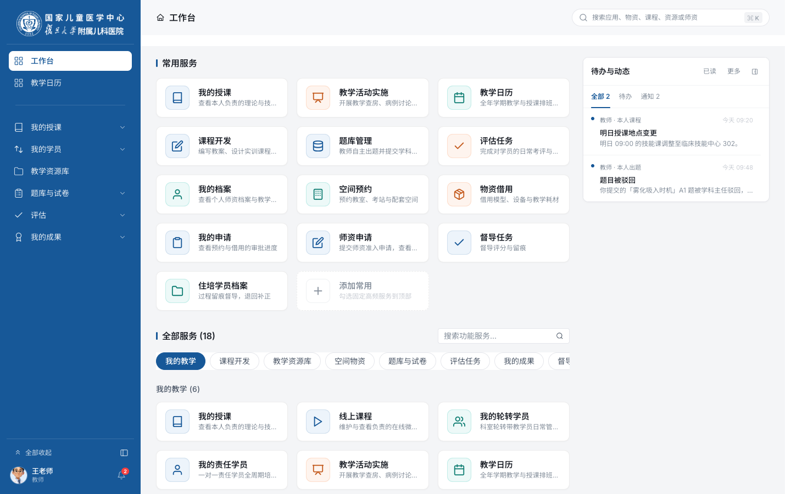
修改后 · 交互状态留痕（师资申请抽屉 / 添加常用弹窗 / 学员端入口）
改后 ·「师资申请」抽屉弹窗（列表 / 表单 / 详情）
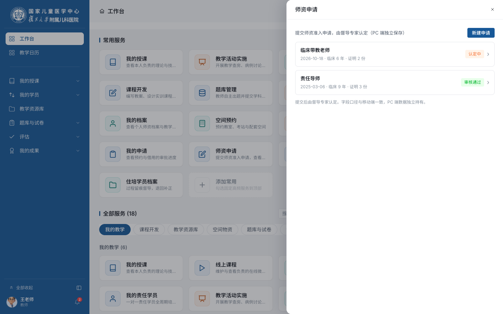
改后 ·「添加常用」自定义勾选弹窗
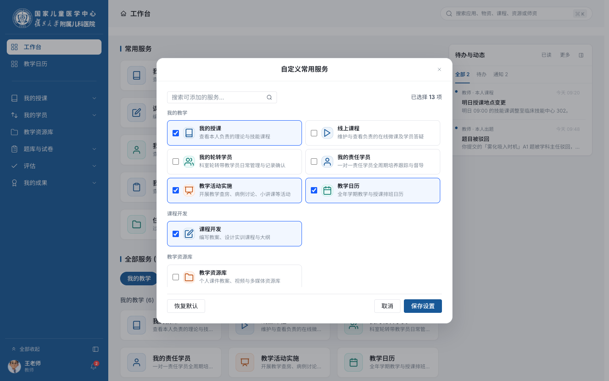
改后 · 学员端工作台同步补齐「师资申请」入口
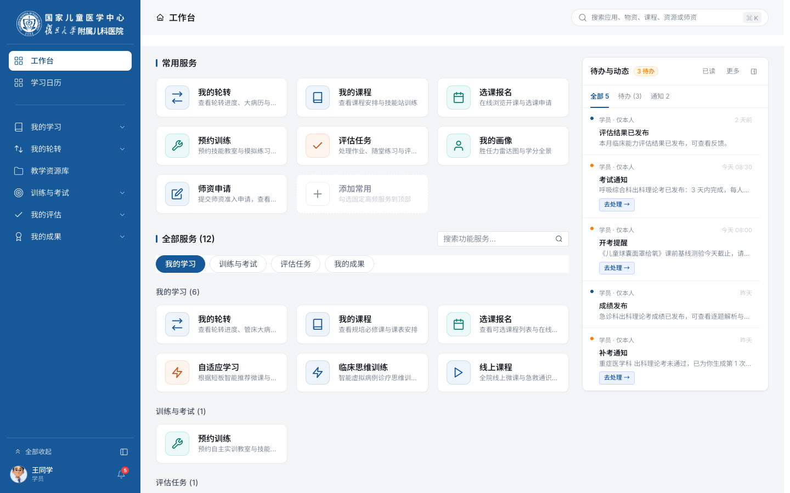
电子班牌最终稿 · 独立目录收拢与「本周课表」抽屉极简流体玻璃 + 3D 头像视觉升级
定位：15.6" 临床技能中心电子班牌（pages/电子班牌/index.html → 底部「本周课表 ^」上拉抽屉）。修改与新增文件：pages/电子班牌/index.html、pages/电子班牌/电子班牌-需求规格说明.md。
修改前 · 存在问题
- 抽屉视觉过素、与首屏割裂：周课表抽屉底板为大面积灰白不透明块，盖死了首屏标志性的丝绸流体光影，呈现类似普通后台看板的干瘪感。
- 缺少 3D 医生视觉基因：课程卡片仅展示纯灰黑文字，未延续首屏极具记忆点的圆形 3D 医生头像与
A-301品牌蓝导视徽章。 - 已结束场次发灰沉闷：周一至周四整卡降透明度，叠加 5 个等高灰色列盒，视觉层次偏弱。
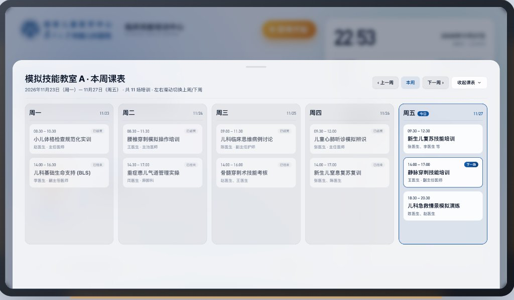
修改后 · 改动说明
- 丝绸流体液态玻璃面板：抽屉改用与首屏同源的青蓝流体柔光玻璃底 + 高光描边，顶部引入
A-301品牌蓝徽章与分段胶囊周次切换器（支持左右滑动切换上周/本周/下周）。 - 5 列流体玻璃卡片 + 圆形 3D 医生头像：每张课程卡底部嵌入精致
34px圆形 3D 医生头像（多人自动叠圆），与首屏 3D 圆形光环阵列高度统一。 - 极简克制单色 + 双主题完整适配：全课表仅用复旦品牌蓝 + 翠绿突出「今日」「正在上课」「下一场」，同步完成极昼浅色与复旦医院深蓝双主题适配，并落地完整空态与硬件呼吸灯闪白模拟接口。
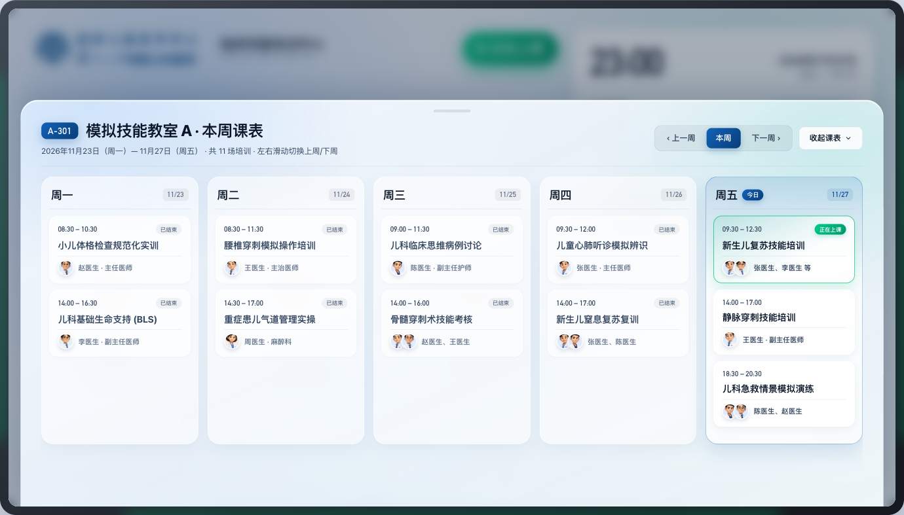
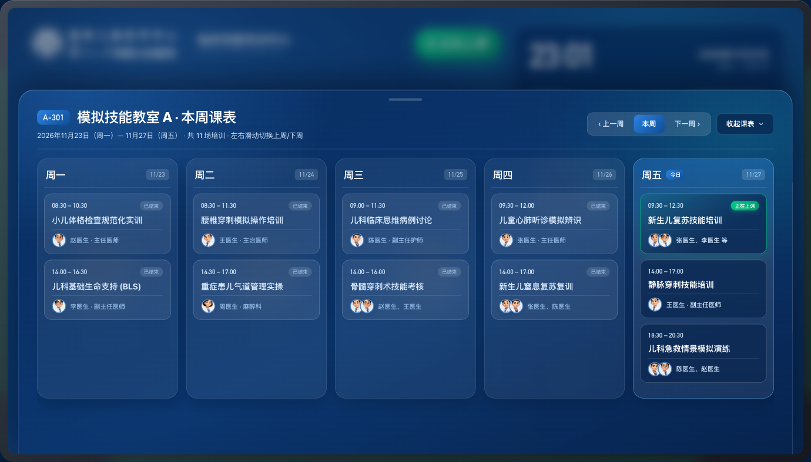
移动端学员端 ·「成绩与评估记录」移除顶部 3 张冗余汇总 KPI 卡
定位：移动端/student-tdesign.html → 首页常用服务「成绩与评估记录」。修改文件：移动端/shared/tdesign-app.js。
修改前 · 存在问题
- 数字信息重复：页面顶部展示「7 全部结果 / 4 基线与形成性 / 3 终结与里程碑」3 张 KPI 卡片，与下方紧邻的「全部(7) / 基线评估(2) / 形成性评估(2) / 终结性评估(2) / 里程碑判定(1)」计数胶囊完全重复，挤压首屏列表展示空间。
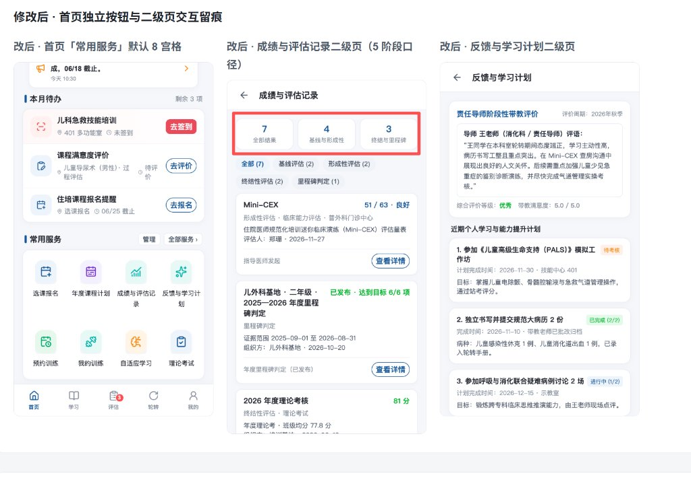
修改后 · 改动说明
- 精简首屏结构：移除顶部
.stu-record-kpis三卡区块，进入二级页后直接由 5 阶段计数胶囊衔接评估记录卡片，首屏多出完整一张成绩卡可视区。
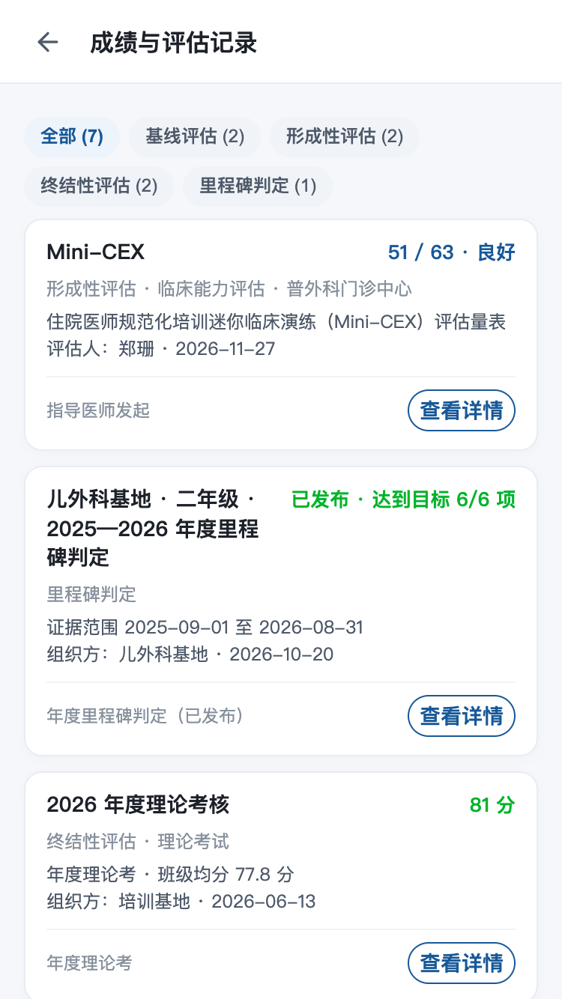
移动端教师端 ·「表单开发任务」与「委员会工作」迁入工作台全部服务（非委员隐藏）
定位：移动端/teacher-tdesign.html → 底部「评估」Tab & 首页「全部服务 › 带教与评价」。修改文件：移动端/shared/tdesign-app.js。
修改前 · 存在问题
- 评估 Tab 顶栏过重：「评估」Tab 顶部堆叠「评估任务 / 表单开发任务 / 委员会工作」三段切换，与下方「待我评估 / 待他人评估」双层页签嵌套，视觉冗余。
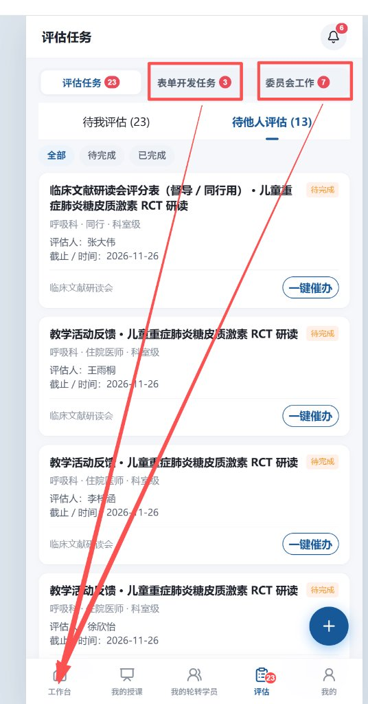
修改后 · 改动说明
- 评估 Tab 纯净回归：移除顶部三段切换，「评估」Tab 只保留纯粹的「待我评估 / 待他人评估」与状态筛选。
- 全部服务承接与权限隐藏：将「表单开发任务」「委员会工作」直接排入工作台「全部服务 › 带教与评价」并打开独立二级页；当教师非评估委员会成员（
isCommitteeMember = false）时，直接隐藏「委员会工作」入口。
改后 · 评估 Tab 纯净态
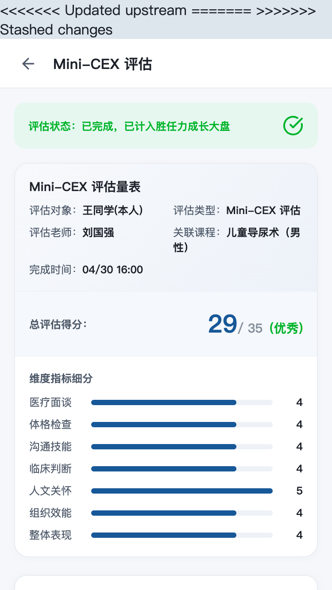
改后 · 全部服务 › 带教与评价入口
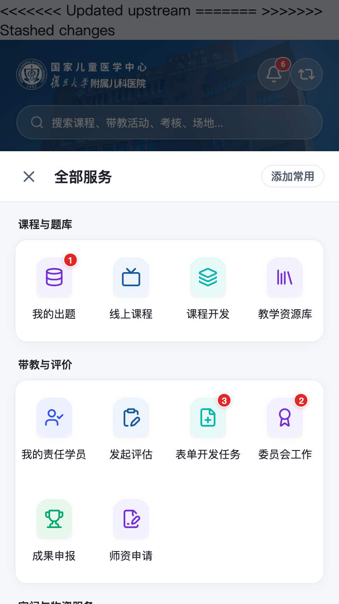
PC 班牌和大屏管理 · 对齐新版电子班牌首页视觉（缩略图 + 详情预览 + 广播投屏拟真）
定位：管理端 → 空间管理 → 班牌和大屏管理（pages/班牌和大屏管理/index.html）。实现文件：pages/班牌和大屏管理/page.js、pages/班牌和大屏管理/page.css、shared/assets/dianzibanpai-erke.jpg。

修改前 · 存在问题
- 电子班牌列表与卡片缩略图仍使用旧版“清华大学 / 音乐室”占位图（
dianzibanpai.png），且容器为正方形（38×38/46×46），横屏首页画面被严重裁切。 - 终端详情抽屉仅展示纯文字网格，缺少终端当前画面预览；多媒体广播发布抽屉右侧「终端物理投屏拟真」为深黑科技风（
FDEK-TERMINAL），与新版浅蓝医疗风电子班牌首页割裂。
改前 · 列表与正方形旧缩略图
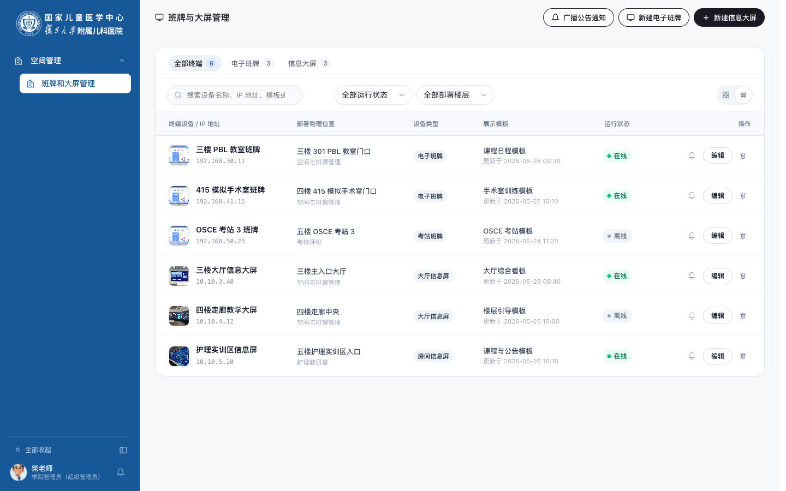
改前 · 广播发布抽屉（深黑待机态）
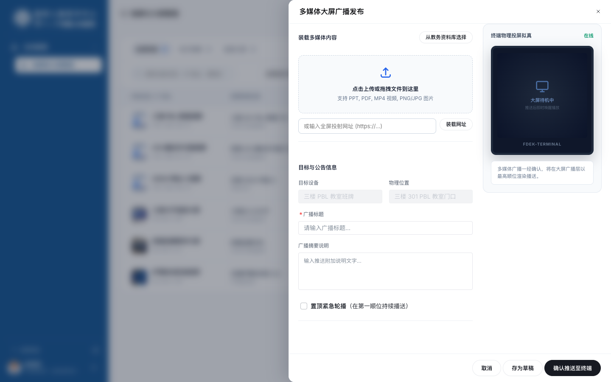
修改后 · 改动说明
- 替换为复旦大学附属儿科医院新版电子班牌首页截图（
dianzibanpai-erke.jpg），并将列表与卡片缩略图容器调整为 16:10 横向比例（58×38/68×44），完整呈现双栏课程与考勤布局。 - 终端详情抽屉顶部新增「当前终端画面预览」卡片，广播发布抽屉未配置广播时直接渲染目标终端首页实景底图，输入广播后切换为浅蓝医疗风「正在广播」白色圆角卡片拟真效果。
改后 · 列表与 16:10 横向新缩略图
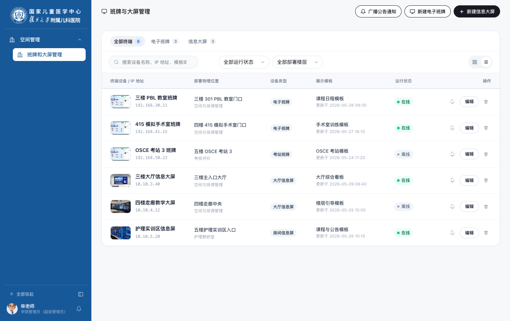
改后 · 终端详情抽屉（含画面预览）
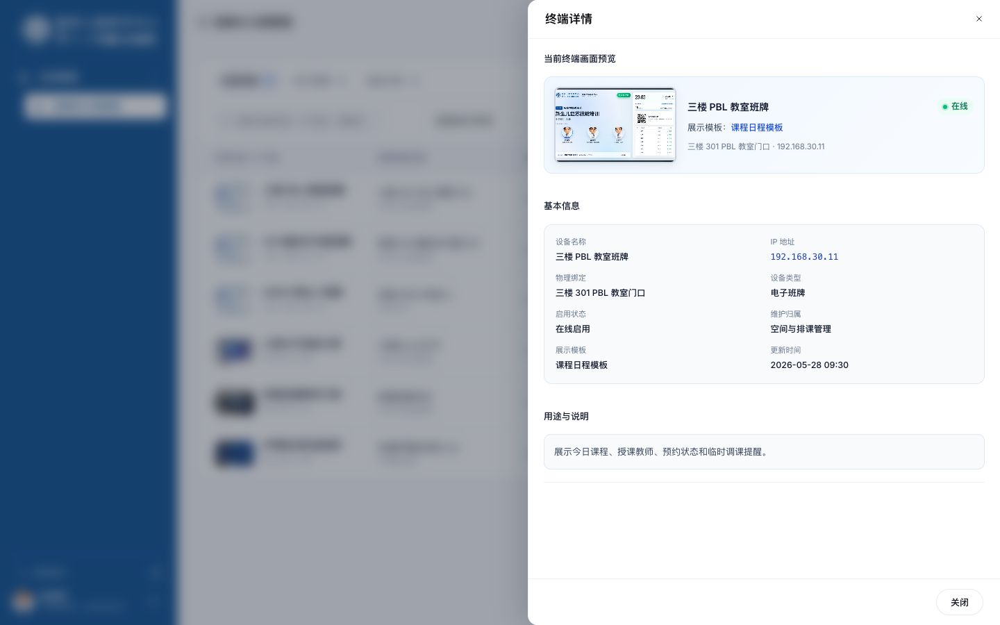
改后 · 广播抽屉（浅蓝医疗风拟真）
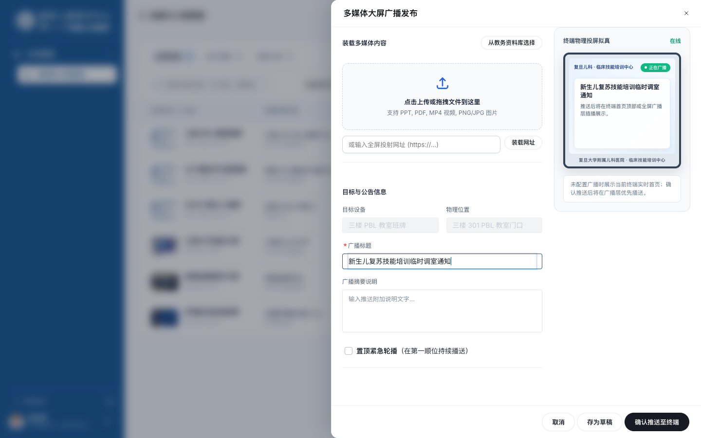